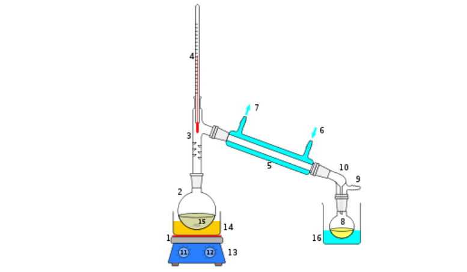

Distillation separates two or more liquid components in a mixture using the
principle of relative volatility or boiling points. The greater the difference in relative
volatility the greater the nonlinearity and the easier it is to separate the mixture
using distillation. The process involves production of vapour by boiling the liquid
mixture in a still and removal of the vapour from the still by condensation. Due to
differences in relative volatility or boiling points, the vapour is rich in light
components and the liquid is rich in heavy components.
Often a part of the condensate is returned (reflux) back to the still and is mixed
with the outgoing vapour. This allows further transfer of lighter components to the
vapour phase from the liquid phase and transfer of heavier components to the liquid
phase from the vapour phase. Consequently, the vapour stream becomes richer in
light components and the liquid stream becomes richer in heavy components.
Different types of devices called plates, trays or packing are used to bring the
vapour and liquid phases into intimate contact to enhance the mass transfer.
Depending on the relative volatility and the separation task (i.e. purity of the
separated components) more trays (or more packing materials) are stacked one
above the other in a cylindrical shell to form a column.
The distillation process can be carried out in continuous, batch or in semi-batch
(or semi-continuous) mode.
Figure 1.1 shows a typical continuous distillation column. The liquid mixture (feed), which is to be separated into its components, is fed to the column at one or more points along the column. Liquid runs down the column due to gravity while the vapour runs up the column. The vapour is produced by partial vaporisation of the liquid reaching the bottom of the column. The remaining liquid is withdrawn from the column as bottom product rich in heavy components. The vapour reaching the top of the column is partially or fully condensed. Part of the condensed liquid is refluxed to the column while the remainder is withdrawn as the distillate product. The column section above the feed tray rectifies the vapour stream with light components and therefore is termed as rectlfying section. The column section below the feed tray strips heavy components from the vapour stream to the liquid stream and is termed as stripping section.

The readers are directed to Smith (1963), Seader and Henley (1998), Perry et al. (1997), McCabe et al. (2001), Gani and co-workers (1986a, 1986b, 1988, 2000), Perkins and coworkers (1996, 1999,2000, 2001) for detailed account of modelling design, operation, control and synthesis of continuous distillation processes.
Batch distillation is, perhaps the oldest operation used for separation of liquid
mixtures. For centuries and also today, batch distillation is widely used for the
production of fine chemicals and specialised products such as alcoholic beverages,
essential oils, perfume, pharmaceutical and petroleum products. It is the most
frequent separation method in batch processes (Lucet et al., 1992).
The essential features of a conventional batch distillation (CBD) column
(Figure 1.2) are:
A bottom receiverheboiler which is charged with the feed to be processed and which provides
the heat transfer surface.
A rectifying column (either a tray or packed column) superimposed on the reboiler, coupled
with either a total condenser or a partial condenser system.
A series of product accumulator tanks connected to the product streams to collect the main
and or the intermediate distillate fractions.
Operation of such a column involves carrying out the fractionation until a
desired amount has been distilled off. The overhead composition varies during the
operation and usually a number of cuts are made. Some of the cuts are desired
products (main-cuts) while others are intermediate fractions (off-cuts) that can be
recycled to subsequent batches to obtain further separation. A residual bottom
fraction may or may not be recovered as product (Mujtaba, 1989).

Figure 1.3 shows a typical semi-batch (semi-continuous) distillation column. The operation of such columns is very similar to CBD columns except that a feed is introduced to the column in a continuous or semi-continuous mode. This type of column is suitable for extractive distillation, reactive distillation, etc. (Lang and coworkers, 1994, 1995; Mujtaba, 1999).